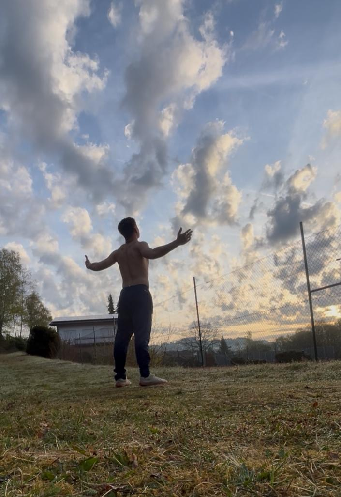

Start with daily inputs.
Food, sleep, movement, and consistency shape how you feel. The coaching starts by making those inputs clearer and easier to repeat.
Prime Health helps you improve energy, sleep, and day-to-day health with practical habit coaching from Gianfranco Stracuzzi.
Prime Health is built around the basics people can actually follow: real food, repeatable habits, better routines, and support that keeps the plan grounded.
Food, sleep, movement, and consistency shape how you feel. The coaching starts by making those inputs clearer and easier to repeat.
Better health is not only about effort. It also comes from routines that help the body slow down, recover, and show up better the next day.
The goal is not a perfect week. The goal is a simple system you can keep returning to without starting over every Monday.

Gianfranco is the health and habits coach behind Prime Health. His public profiles connect personal discipline, soccer, and health coaching into one clear idea: better health comes from real habits you can practice daily.
Prime Health does not position the work as a quick fix. It focuses on food, sleep, energy, and consistency so clients can improve the way they live, not just chase a short-term result.
Prime Health points visitors toward 1:1 work, habit coaching, and structured plans for different levels of commitment.
Work directly with Gianfranco to assess where your habits are now, simplify the next steps, and build a routine you can follow.
The coaching language stays close to the brand promise: real food, real habits, real results.
Start with a simple monthly plan or commit to a longer transformation path for deeper lifestyle change.
Each plan is designed around practical habit change, real food, better energy, and a healthier lifestyle that can last.
Prime Health coaching is educational and habit-based. It is not medical advice, diagnosis, or treatment.
No medical claims. No overpromising. Just a clear coaching process built around daily behavior.
Start with what your days actually look like: food, sleep, movement, energy, and the routines that keep repeating.
Focus on real-food choices that reduce friction and make progress easier to repeat.
Build small daily rhythms that support better recovery, steadier energy, and healthier decisions.
Keep the process honest by looking at consistency, behavior, and how the client feels over time.
Book a consultation with Prime Health or start by following the Real Food Challenge on Instagram. A dedicated booking link can be added here when the client provides it.